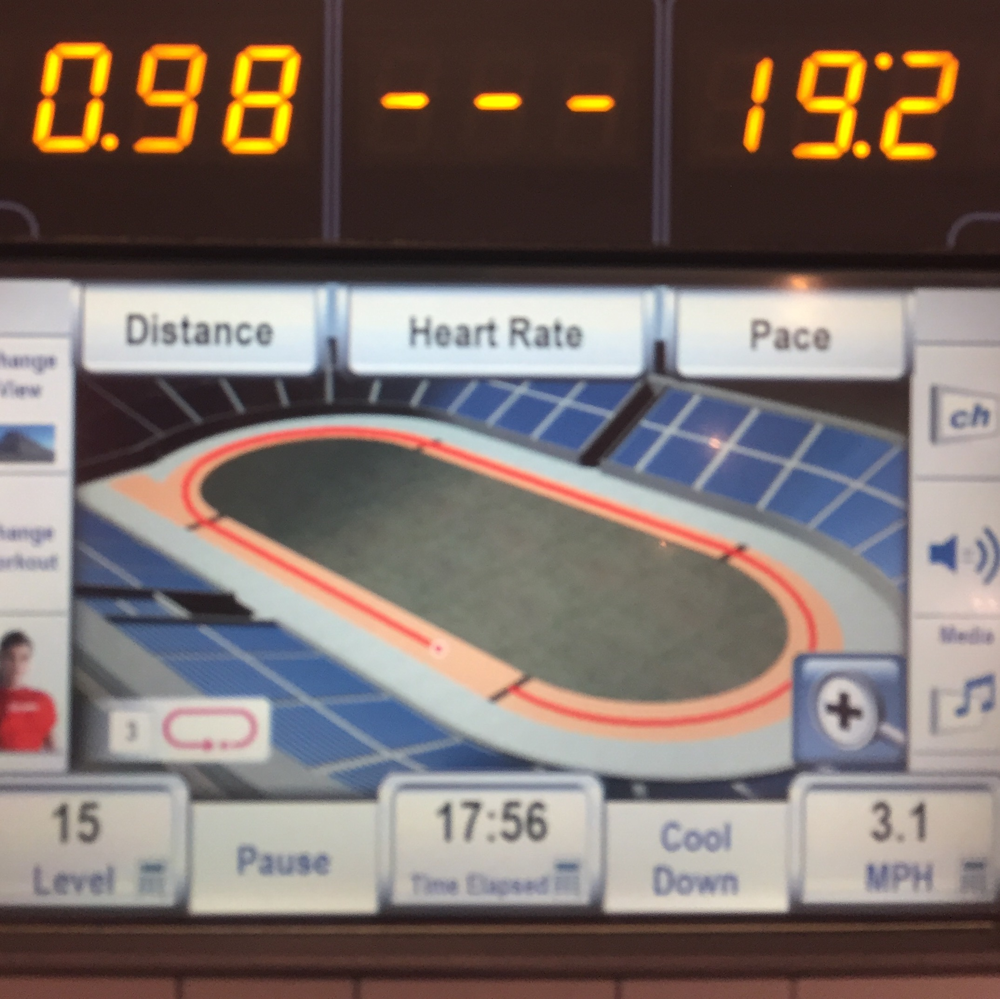

Listened to: Coloring Book by Chance The Rapper
Since I was home, I figured I'd hit up the gym. I thought a treadmill would be better for my joints and bod and everything, but it was killing my shins. I tried to start up like three different times and ran a total of around half a mile before I switched to the elliptical for ~1 mile and ~20 minutes (I don't trust the elliptical stats too much).

Didn't do much today before running except read a few pages of Lies. Oh except for watch that 4 steps to lose weight video like 10 times -- I have no idea why it affected me so much. After I went to the gym, I went to Jeff's and hung out with him and Jake and also watched Zootopia. Then we talked about a bunch of things until 3am, including Avatar The Last Airbender for like two hours. Ate far too many sour patch. Pretty good night.
Home Prev Next